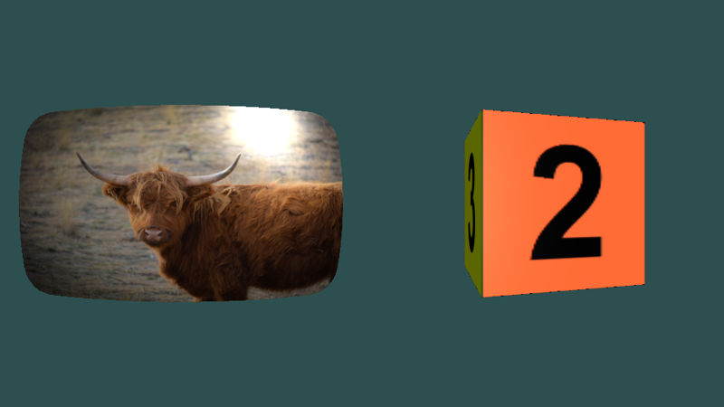

3D meshes
yak2D is a 2D framework, but the mesh render stage (IMeshRenderStage) can wrap any surface round a lit 3D shape. Typical uses are a curved "old television" screen, a spinning planet or dice, or a 2D scene tilted in 3D for a transition.

Setting up
A mesh render stage needs a mesh (the shape), some lights, and a 3D camera:
public override bool CreateResources(IServices yak)
{
_yakPhoto = yak.Surfaces.LoadTexture("yakphoto", AssetSourceEnum.Embedded);
_dice = yak.Surfaces.LoadTexture("onetosix", AssetSourceEnum.Embedded);
// A 3D camera: where it is, what it looks at, and which way is up (+Z points out of the screen)
_camera = yak.Cameras.CreateCamera3D(new Vector3(0.0f, 0.0f, 300.0f), Vector3.Zero, Vector3.UnitY,
60.0f, 480.0f / 540.0f, 1.0f, 1000.0f);
// A curved, old-television shaped mesh, lit by one directional light
_screen = yak.Stages.CreateMeshRenderStage();
yak.Stages.SetMeshRenderMesh(_screen, yak.Helpers.CommonMeshBuilder.CreateCrtMesh(320.0f, 180.0f, 64, 0.3f, 0.3f));
yak.Stages.SetMeshRenderLightingProperties(_screen, new MeshRenderLightingPropertiesConfiguration
{
NumberOfActiveLights = 1,
Shininess = 20.0f,
SpecularColour = Colour.White.ToVector3()
});
yak.Stages.SetMeshRenderLights(_screen, new[]
{
new MeshRenderLightConfiguration
{
LightType = LightType.Directional,
Position = Vector3.Normalize(new Vector3(-1.0f, -1.0f, -1.0f)), // for directional lights: the direction
Colour = Colour.White.ToVector3(),
AmbientCoefficient = 0.2f
}
});
// A cube, using the default lighting
_cube = yak.Stages.CreateMeshRenderStage();
Rendering
q.MeshRender(stage, camera3D, source, target) draws the mesh, textured with the source surface. The source can be a render target, so a whole 2D scene can be put on the 3D shape (the Mesh_HelperExamples sample does this).
public override void PreDrawing(IServices yak, float secondsSinceLastDraw, float secondsSinceLastUpdate)
{
_angle += 60.0f * secondsSinceLastDraw; // degrees
var cube = yak.Helpers.CommonMeshBuilder.CreateRectangularCuboidMesh(Vector3.Zero, 120.0f, 120.0f, 120.0f, _angle);
yak.Stages.SetMeshRenderMesh(_cube, cube);
}
public override void Rendering(IRenderQueue q, IRenderTarget windowRenderTarget)
{
q.ClearColour(windowRenderTarget, Colour.DarkSlateGray);
q.ClearDepth(windowRenderTarget);
// The source texture is wrapped over the mesh. It can be any surface, including a render
// target, so a whole rendered 2D scene can be put onto a 3D object
q.SetViewport(_left);
q.MeshRender(_screen, _camera, _yakPhoto, windowRenderTarget);
q.SetViewport(_right);
q.MeshRender(_cube, _camera, _dice, windowRenderTarget);
}
Mesh rendering uses the target's depth buffer, so clear the depth first.
Meshes
A mesh is an array of Vertex3D (position, normal and texture coordinates), three per triangle. You can build your own, or use the builders in yak.Helpers.CommonMeshBuilder (ICommonMeshBuilder):
| Builder | Shape |
|---|---|
| CreateQuadMesh | A flat rectangle. |
| CreateCrtMesh | A gently curved rectangle with rounded corners, like an old monitor. |
| CreateRectangularCuboidMesh | A box. The texture is split into a 3 x 2 grid, one cell per face (see RectangularCuboidMeshTexCoords). |
| CreateSphericalMesh | A sphere, or an ellipsoid if the sizes differ. The texture is wrapped round it like a world map. |
Set a stage's mesh with SetMeshRenderMesh(). Changing it every frame is fine (the example rebuilds a rotating cube each frame).
Lighting
Lighting is per-pixel (Phong). A stage has up to 8 lights, set with SetMeshRenderLights(), and some overall properties set with SetMeshRenderLightingProperties():
| MeshRenderLightingPropertiesConfiguration | |
|---|---|
NumberOfActiveLights |
How many of the lights to use (up to 8). |
SpecularColour |
The colour of shiny highlights. |
Shininess |
1 or less is matt; higher values give smaller, sharper highlights. |
| MeshRenderLightConfiguration | |
|---|---|
LightType |
Directional (like sunlight: same direction everywhere) or Spotlight (a cone from a point). |
Position |
For directional lights, the direction the light travels. For spotlights, the light's position. |
Colour |
The light's colour (as a Vector3: Colour.White.ToVector3()). |
AmbientCoefficient |
How much light reaches surfaces facing away from the light. |
ConeDirection, ConeAngle, Attenuation |
Spotlights only: where it points, how wide the cone is, and how quickly it fades with distance. |
Both methods take an optional transitionSeconds to animate the lighting smoothly. A new stage has a default light facing the camera.
See also
- Samples: Mesh_HelperExamples (all four builders, with a fly-through camera), Mesh_ManualMeshSimple, Mesh_ManualChangingMesh, StyleEffects_CRT
- Coordinate systems: 3D